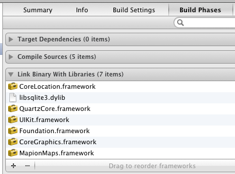
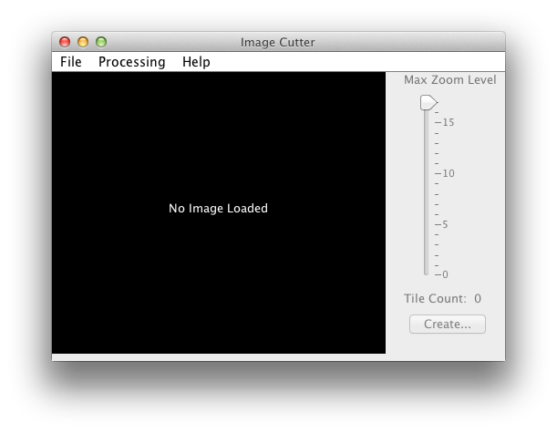
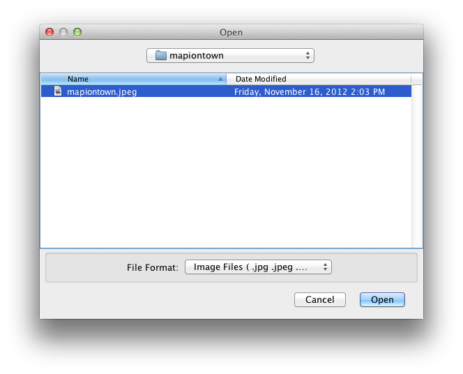
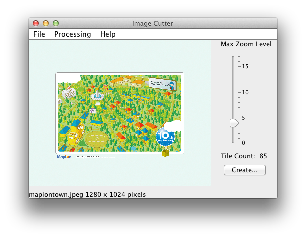
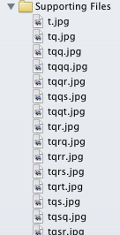
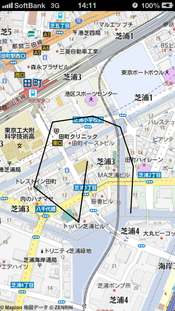

準備
- APIキーからAPIキーを取得する
- ダウンロードからframeworkをダウンロードし解凍する
- 解凍したディレクトリ内のpin@2x.png,loading.pngをプロジェクトにコピーする（それ以外のアイコンも自由にお使い下さい）
- 解凍したディレクトリをプロジェクトに追加する
- CoreLocation.framework,QuartzCore.framework,libsqlite3.dylibをプロジェクトに追加する

地図を表示する
#import <MapionMaps/MapionMaps.h>
...
- (void)viewDidLoad {
[super viewDidLoad];
MMMapView *mapView = [[MMMapView alloc] initWithFrame:[[self view] bounds] key:@"APIキー"];
// 地図を指定する場合
// id <MMMap> openStreetMap = [[OpenStreetMap alloc] init];
// MMMapView *mapView = [[MMMapView alloc] initWithFrame:[[self view] bounds] key:@"APIキー" map:openStreetMap];
[self.view addSubview:mapView];
}
緯度経度縮尺を指定して地図を表示する
#import <MapionMaps/MapionMaps.h>
...
- (void)viewDidLoad {
[super viewDidLoad];
MMMapView *mapView = [[MMMapView alloc] initWithFrame:[[self view] bounds] key:@"APIキー"];
[self.view addSubview:mapView];
[mapView setZoom:12.3 animated:NO]; // animated:YESでアニメーションする
CLLocationCoordinate2D coordinate;
coordinate.latitude = 35.3;
coordinate.longitude = 139.3;
[mapView setCenterCoordinate:coordinate animated:NO]; // animated:YESでアニメーションする
}
ピンを立てる
MMAnnotationView *annotationView = [[MMAnnotationView alloc] initWithMapView:mapView coordinate:mapView.centerCoordinate];
annotationView.title = @"タイトル"; // titleを設定すればタップで吹き出しが出る
// annotationView.image = [UIImage imageNamed:@"myicon.png"]; // 独自アイコンを使いたい場合
// annotationView.centerOffset = CGPointMake(-21, -28); // アイコンの中心を設定する
[mapView addAnnotation:annotationView animated:NO]; // animated:YESでアニメーションする
吹き出し内のボタンタップ時の挙動を指定する場合はMMMapViewDelegateを作ってMMMapViewのdelegateプロパティに設定する
#import <MapionMaps/MapionMaps.h>
@interface MapViewDelegate : NSObject <MMMapViewDelegate>
@end
@implementation MapViewDelegate
- (void)tapOnPopup:(MMMapView *)mapView annotationView:(MMAnnotationView *)annotationView control:(UIControl *)control {
UIAlertView *alert = [[UIAlertView alloc] initWithTitle:annotationView.title message:nil delegate:nil cancelButtonTitle:nil otherButtonTitles:@"閉じる", nil];
[alert show];
[alert release];
}
@end
ピンを削除する
ピンを指定して削除する
[mapView removeAnnotation:annotationView];
すべてのピンを削除する
[mapView removeAnnotations:mapView.annotations];
リスナー
MMMapViewDelegateを実装したクラスを作ってMMMapViewのdelegateプロパティに設定する
#import <MapionMaps/MapionMaps.h>
@interface MapViewDelegate : NSObject <MMMapViewDelegate>
@end
@implementation MapViewDelegate
- (void)doubleTap:(MMMapView *)mapView point:(CGPoint)point {
// ダブルタップ時
}
- (void)singleTap:(MMMapView *)mapView point:(CGPoint)point {
// シングルタップ時
}
- (void)singleTapTwoFingers:(MMMapView *)mapView point:(CGPoint)point {
// 2本指タップ時
}
- (void)longSingleTap:(MMMapView *)mapView point:(CGPoint)point {
// 長押し時
}
- (void)beforeMapMove:(MMMapView *)mapView {
// 地図をスクロールする前
}
- (void)afterMapMove:(MMMapView *)mapView {
// 地図をスクロールした後
}
- (void)beforeMapZoom:(MMMapView *)mapView {
// ズームチェンジする前
}
- (void)afterMapZoom:(MMMapView *)mapView {
// ズームチェンジした後
}
- (void)tapOnPopup:(MMMapView *)mapView annotationView:(MMAnnotationView *)annotationView control:(UIControl *)control {
// 吹き出し内のボタンタップ時
}
@end
mapView.delegate = [[MapViewDelegate alloc] init];
タッチ座標を緯度経度に変換する
CGPoint point = [touch locationInView:mapView];
CLLocationCoordinate2D coordinate = [mapView pixelToCoordinate:point];
緯度経度をタッチ座標に変換する
CLLocationCoordinate2D coordinate;
coordinate.latitude = 35.3;
coordinate.longitude = 139.3;
CGPoint point = [mapView coordinateToPixel:coordinate];
独自地図を表示する
OpenStreetMapのようなデファクトスタンダードな仕様の地図であればMMAbstractEPSG900913Mapクラスを継承することにより容易に実現できます。独自地図にピンを立てたりラインを引くことも可能です。
OpenStreetMapを表示する場合
#import <MapionMaps/MapionMaps.h>
@interface OpenStreetMap : MMAbstractEPSG900913Map
@end
@implementation OpenStreetMap
- (id)init {
if (!(self = [super init])) return nil;
self.maxZoom = 18;
self.minZoom = 0;
self.name = @"OpenStreetMap";
self.version = @"";
self.copyright = @"Map data © OpenStreetMap contributors, CC BY-SA";
// self.tileLength = 384; // ズームにおける1タイルあたりの最大サイズ。デフォルトは256。OpenStreetMapのタイルのサイズは256なので384にすると1.5倍まで拡大する。
return self;
}
- (NSURL *)URLForTile:(MMTile)tile {
NSString *urlString = [NSString stringWithFormat:@"http://tile.openstreetmap.org/%d/%d/%d.png", tile.zoom, tile.x, tile.y];
return [NSURL URLWithString:urlString];
}
@end
使い方
#import <MapionMaps/MapionMaps.h>
...
- (void)viewDidLoad {
[super viewDidLoad];
id <MMMap> openStreetMap = [[OpenStreetMap alloc] init];
MMMapView *mapView = [[MMMapView alloc] initWithFrame:[[self view] bounds] key:@"APIキー" map:openStreetMap];
[self.view addSubview:mapView];
}
#import <MapionMaps/MapionMaps.h>
@interface GSIMap : MMAbstractEPSG900913Map
@end
@implementation GSIMap
- (id)init {
if (!(self = [super init])) return nil;
self.maxZoom = 18;
self.minZoom = 5;
self.name = @"GSI";
self.version = @"";
self.copyright = @"国土地理院";
// self.tileLength = 384; // ズームにおける1タイルあたりの最大サイズ。デフォルトは256。国土地理院のタイルのサイズは256なので384にすると1.5倍まで拡大する。
return self;
}
- (NSURL *)URLForTile:(MMTile)tile {
NSString *did;
switch (tile.zoom) {
case 5:
case 6:
case 7:
case 8:
did = @"JAIS";
break;
case 9:
case 10:
case 11:
did = @"BAFD1000K";
break;
case 12:
case 13:
case 14:
did = @"BAFD200K";
break;
case 15:
case 16:
case 17:
did = @"DJBMM";
break;
case 18:
did = @"FGD";
break;
default:
did = @"";
break;
}
NSString *xstr = [NSString stringWithFormat:@"%07d", tile.x];
NSString *ystr = [NSString stringWithFormat:@"%07d", tile.y];
NSString *path = [self path:xstr y:ystr];
NSString *urlString = [NSString stringWithFormat:@"http://cyberjapandata.gsi.go.jp/sqras/all/%@/latest/%d%@/%@%@.png", did, tile.zoom, path, xstr, ystr];
return [NSURL URLWithString:urlString];
}
#pragma mark - private
- (NSString *)path:(NSString *)x y:(NSString *)y {
NSString *dir = @"";
NSString *xi;
NSString *yi;
for (int i = 0; i < 6; i++) {
xi = [x substringWithRange:NSMakeRange(i, 1)];
yi = [y substringWithRange:NSMakeRange(i, 1)];
dir = [dir stringByAppendingFormat:@"/%@%@", xi, yi];
}
return dir;
}
@end
使い方
#import <MapionMaps/MapionMaps.h>
#import "GSIMap.h"
...
- (void)viewDidLoad {
[super viewDidLoad];
id <MMMap> gsiMap = [[GSIMap alloc] init];
MMMapView *mapView = [[MMMapView alloc] initWithFrame:[[self view] bounds] key:@"APIキー" map:gsiMap];
[self.view addSubview:mapView];
}
独自画像を表示する
ローカルやWEBにある独自画像を表示することが可能です。独自画像にピンを立てたりラインを引くことも可能です。例として以下の画像（mapiontown.png）をタイル化してframeworkで表示させる場合を示します。

タイル化手順
-
GMap Image Cutterをダウンロード＆インストール
-
GMap Image Cutterを起動する

-
mapiontown.pngを開く

-
Createを押す

-
mapiontown-tilesとmapiontown.htmlが出来上がる（必要なのはmapiontown-tiles内のタイルです）

-
Supporting Filesにタイルをコピーする

MapionTownMapクラス作成
#import <MapionMaps/MapionMaps.h>
@interface MapionTownMap : NSObject <MMMap>
@property (nonatomic, assign) float minZoom;
@property (nonatomic, assign) float maxZoom;
@property (nonatomic, assign) NSUInteger tileLength;
@property (nonatomic, assign) MMProjectedRect projectedRect;
@property (nonatomic, retain) NSString *name;
@property (nonatomic, retain) NSString *version;
@property (nonatomic, retain) NSString *copyright;
@end
#import "MapionTownMap.h"
@implementation MapionTownMap
@synthesize minZoom = minZoom_;
@synthesize maxZoom = maxZoom_;
@synthesize tileLength = tileLength_;
@synthesize projectedRect = projectedRect_;
@synthesize name = name_;
@synthesize version = version_;
@synthesize copyright = copyright_;
- (id)init {
if (!(self = [super init])) return nil;
float screenScale = 1.0;
if ([[UIScreen mainScreen] respondsToSelector:@selector(scale)]) {
screenScale = [[[UIScreen mainScreen] valueForKey:@"scale"] floatValue];
}
float maxLength = 256 / screenScale;
self.projectedRect = MMProjectedRectMake(-maxLength, -maxLength, maxLength * 2, maxLength * 2);
self.tileLength = 256;
self.maxZoom = 2;
self.minZoom = 0;
self.name = @"MapionTown";
self.version = @"";
self.copyright = @"";
return self;
}
#pragma mark - MMMap
- (UIImage *)imageForTile:(MMTile)tile {
NSString *fileName = [self tileToFileName:tile];
return [UIImage imageNamed:fileName];
}
- (CLLocationCoordinate2D)projectedPointToCoordinate:(MMProjectedPoint)point {
CLLocationCoordinate2D coordinate;
coordinate.latitude = point.y;
coordinate.longitude = point.x;
return coordinate;
}
- (MMProjectedPoint)coordinateToProjectedPoint:(CLLocationCoordinate2D)coordinate {
MMProjectedPoint point;
point.x = coordinate.longitude;
point.y = coordinate.latitude;
return point;
}
#pragma mark - Private
- (NSString *)tileToFileName:(MMTile)tile {
double p = pow(2.0, tile.zoom);
int x = tile.x;
int y = tile.y;
NSMutableString *tileName = [NSMutableString string];
[tileName appendString:@"t"];
for (int i = 0; i < tile.zoom; i++) {
p = p / 2;
if (y < p) {
if (x < p) {
[tileName appendString:@"q"];
} else {
[tileName appendString:@"r"];
x -= p;
}
} else {
if (x < p) {
[tileName appendString:@"t"];
y -= p;
} else {
[tileName appendString:@"s"];
x -= p;
y -= p;
}
}
}
[tileName appendString:@".jpg"];
return tileName;
}
@end
使い方
#import <MapionMaps/MapionMaps.h>
#import "MapionTownMap.h"
...
- (void)viewDidLoad {
[super viewDidLoad];
id <MMMap> mapionTownMap = [[MapionTownMap alloc] init];
MMMapView *mapView = [[MMMapView alloc] initWithFrame:[[self view] bounds] key:@"APIキー" map:mapionTownMap];
[self.view addSubview:mapView];
}
キャッシュの上限値を設定する
MMMapViewDelegateのcacheCapacityを実装する
- (NSUInteger)cacheCapacity {
return 1000; // 4000以上を設定することはできません
}
サークルを描画する
MMCircle *circle = [[MMCircle alloc] initWithMapView:mapView center:mapView.centerCoordinate r:10000]; // rは半径（m）
circle.fillColor = [UIColor colorWithRed:0 green:0 blue:1 alpha:0.8];
[mapView addOverlay:circle];
// [mapView removeOverlay:circle]; // 削除
ラインを描画する
MMShape *line = [[MMShape alloc] initWithMapView:mapView];
[line addLineToPoint:CGPointMake(50, 50)];
[line addLineToPoint:CGPointMake(100, 100)];
[mapView addOverlay:line];
// line.lineColor = [UIColor colorWithRed:1 green:0 blue:0 alpha:0.6]; // ラインの色を指定する場合
// line.lineCap = kCALineCapRound; // ライン先端の形状 kCALineCapButt（デフォルト） / kCALineCapRound / kCALineCapSquare
// line.lineJoin = kCALineJoinRound; // ライン接続部の形状 kCALineJoinMiter（デフォルト） / kCALineJoinRound / kCALineJoinBevel
// [mapView removeOverlay:line]; // 削除

ポリゴンを描画する
MMShape *polygon = [[MMShape alloc] initWithMapView:mapView];
polygon.fillColor = [UIColor colorWithRed:1 green:0 blue:0 alpha:0.6];
[polygon addLineToPoint:CGPointMake(100, 100)]; // 緯度経度を指定したい場合はaddLineToCoordinate:を使う
[polygon addLineToPoint:CGPointMake(200, 200)];
[polygon addLineToPoint:CGPointMake(200, 100)];
[polygon addLineToPoint:CGPointMake(100, 100)];
[polygon closePath]; // ポリゴンの場合はこうして明示的に閉じる
[mapView addOverlay:polygon];
// polygon.lineColor = [UIColor colorWithRed:1 green:0 blue:0 alpha:0.6]; // ラインの色を指定する場合
// polygon.lineCap = kCALineCapRound; // ライン先端の形状 kCALineCapButt（デフォルト） / kCALineCapRound / kCALineCapSquare
// polygon.lineJoin = kCALineJoinRound; // ライン接続部の形状 kCALineJoinMiter（デフォルト） / kCALineJoinRound / kCALineJoinBevel
// polygon.fillColor = [UIColor colorWithRed:0 green:0 blue:1 alpha:0.6]; // ポリゴンの中身に色を付ける場合
// [mapView removeOverlay:polygon]; // 削除